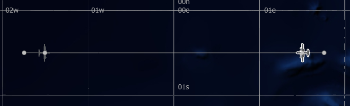

Movers and Routes¶
A mover is a platform subsystem that defines how a platform is able to move within its environment. A route is an ordered list of specific positions (or waypoints) that define the path of a particular platform as it moves.
Several domain specific AFSIM mover types include:
|
|
|
|
Quick Start¶
A mover may be defined within a platform definition, within a platform type definition, or defined independently, and added to or modified within a given platform or platform type.
The following code samples result in the same output and are scalable. To encourage best practices and use of abstraction, a platform defined mover is not provided:
Independently Defined Mover |
Platform Type Defined Mover |
mover CARGO_AIR_MOVER WSF_AIR_MOVER
operational
update_interval 3 sec
end_mover
platform_type CARGO_AIRCRAFT WSF_PLATFORM
icon c130
spatial_domain air
category cargo
add mover CARGO_AIR_MOVER
end_mover
end_platform_type
|
platform_type CARGO_AIRCRAFT WSF_PLATFORM
icon c130
spatial_domain air
category cargo
mover WSF_AIR_MOVER
operational
update_interval 3 sec
end_mover
end_platform_type
|
The following code sample demonstrates the basics of a platform route. Add a route to a platform by including the following route command block in the platform definition:
route
position 00:30s 01:30w altitude 8000 m speed 500 km/h
position 00:30s 01:45e
end_route
The platform’s initial position will be set to the first position defined in the route. Subsequent position commands will define subsequent locations in the route. Labels may be used to create loops in a route if desired. If not specified, the default route altitude is determined from the owning platform’s initial position information, if available. The altitude and speed arguments are optional for a given position. If not specified, a platform will remain at the last specified altitude and speed.
Closer Look¶
Movers are the first in a list of several platform parts which are critical to AFSIM simulations. Though the two are not synonymous, for simpler platforms such as ground vehicles, it is often helpful to think of a mover as a vehicles engine. However, this analogy breaks down for multi-engine vehicles such as aircraft, which in most cases require only a single mover.
Note
The following steps assume that the “simple_flight” scenario is present as discussed in Platforms and Platform Types.
Adding Movers to a Scenario¶
Open the simple_flight project and simple_flight.txt in Wizard.
Add the following mover command block within the CARGO_AIRCRAFT platform type definition and save the file:
mover WSF_AIR_MOVER operational end_mover
Note
With the addition of this mover block, any platforms inheriting from the CARGO_AIRCRAFT platform type are capable of powered flight through (Earth) air.
Now capable of powered flight, platforms inheriting the CARGO_AIRCRAFT platform type require initial kinematic state information. This should be provided as part of a route.
Adding Platform Routes¶
Add the following route command block to platform “cargo-1”:
route position 00:30s 01:30w altitude 8000 m speed 500 km/h position 00:30s 01:30e end_route
In the Wizard Map Display, select “cargo-2”.
Right click cargo-2 to open the context menu. From there, select Route, then select Create Route on cargo-2. This will create a waypoint at the platform and a route in the platform’s definition in the scenario file.
With cargo-2’s first route waypoint selected, right click the map display somewhere near coordinate 00:30s 01:45w (just west of cargo-1’s initial position) and select Add at Location, Waypoint after selection.
{kind=link}
Though the formatting may vary, this process will result in cargo-2’s route resembling the following:
route position 00:30s 01:30e altitude 8000 m speed 500 km/h position 00:30s 01:45w end_route
Save the file.
Wizard’s Map Display should reflect the following:
Note that with the routes provided, “cargo-1” and “cargo-2” are on a collision course, having only minutes to react before colliding. The focus of upcoming modules is to provide these aircraft the means to avoid a collision, and return to their assigned routes after navigating around one another.
Review¶
After completing this section, the simple_flight project should include a single scenario file, simple_flight.txt that reflects the following:
# simple_flight demo
simulation_name "Simple Flight"
execute at_time 0.1 sec absolute
writeln("\nSimulating simple_flight scenario...");
end_execute
end_time 30 min
platform_type CARGO_AIRCRAFT WSF_PLATFORM
icon c130
spatial_domain air
category cargo
mover WSF_AIR_MOVER
update_interval 3 sec
end_mover
end_platform_type
platform cargo-1 CARGO_AIRCRAFT
heading 90 deg
altitude 8000m
route
position 00:30s 01:30w altitude 8000 m speed 500 km/h
position 00:30s 01:45e
end_route
end_platform
platform cargo-2 CARGO_AIRCRAFT
heading -90 deg
altitude 8000m
route
position 00:30s 01:30e altitude 0.00 ft speed 500 kmh
position 00:30s 01:45w
end_route
end_platform
Summary¶
Movers facilitate movement of the owning platform, and routes provide travel instructions to platforms. Routes may be created with the Wizard Map Display, or directly from within a given scenario file. In either case, existing routes may be modified via both interfaces as well. A platform’s route will override the existing initial position and kinematic state of the owning platform if they are defined, so it is unnecessary to provide an initial position to a platform if an initial route is provided.
For more advanced simulations, multiple movers may exist on a single platform, facilitating the simulation of cross-domain vehicles, such as an aircraft capable of landing and moving on water.
Routes may also include labels to allow a platform to repeat a route indefinitely.